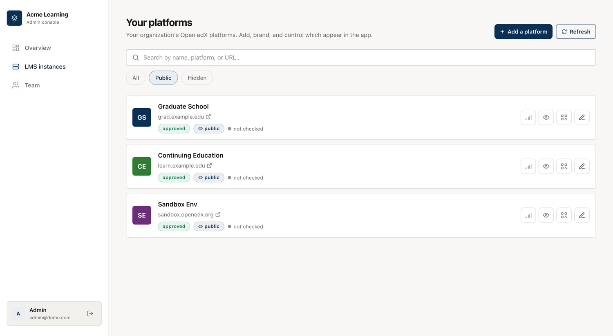
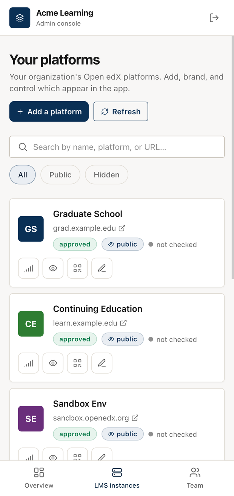

Provider / curated mode¶
The pilot runs an open catalog: anyone can register an Open edX platform, learners search for it, and moderators clean up what doesn't belong. That model assumes you don't trust the list.
An institution that runs a handful of its own platforms has the opposite problem. Say you're a university with three Open edX sites — one for undergraduates, one for the graduate school, one for continuing education. You want a single branded app where students pick their site and sign in. You don't want a search box, you don't want strangers adding entries, and there's nothing to moderate because every platform on the list is yours.
That's curated mode (DIRECTORY_MODE=curated). It turns the whole public
marketplace layer off and treats the registry as one organization's own catalog.
What changes¶
Everything that exists to police an untrusted list goes away.
- No moderation. A platform you add is live and marked reviewed the moment you save it. There's no "pending" or "unreviewed" state, because you're not vetting submissions from strangers — you're listing your own sites.
- No learner reports. The app hides Report this LMS, and the report endpoint is closed. Nobody reports a platform they were handed by their own institution.
- No public sign-up. The account form only signs people in. You provision admins yourself (an environment variable at first boot, or the Team tab afterwards), and any admin can add a platform.
- The app skips search. Learners don't hunt for a platform. The app opens directly on your platforms, and tapping one themes the app to that site and drops the student on its sign-in screen.
Public visibility is the one control that still matters: a platform set to public shows up in the app, and one set to hidden doesn't. That's how you stage a site before students see it, or retire one without deleting its history.
The console, trimmed to match¶
Because there's nothing to moderate, the admin console loses the parts that only made sense for an open catalog. The Complaints tab is gone, the review queue and the reviewed/featured badges disappear, and the LMS list keeps a single filter: public or hidden.

The console is responsive, so you can add or hide a platform from a phone as easily as from a desktop.

Curated vs. the open pilot¶
| Search mode (pilot default) | Curated mode (provider) | |
|---|---|---|
| Who fills the catalog | Anyone who registers | Only admins you provision |
| The learner's first screen | A search box | Your platforms, listed directly |
| New submissions | Auto-approved, then reviewed | Live and reviewed on save |
| Learner reports | Routed to a triage inbox | Off |
| Public sign-up | Open to LMS owners | Closed |
| What "in the app" means | Public + not blocked | Public (hidden = staged/retired) |
| Best fit | A shared, public app | One organization's branded app |
Set it up¶
- Deploy your own registry. Fork this repository and stand it up following Configuration & deployment. A provider runs its own instance rather than sharing the public pilot.
- Switch the mode on. Set
DIRECTORY_MODE=curated, and setPROVIDER_NAMEandPROVIDER_TAGLINEso the console and app carry your name. - Provision the first admin. Set
ADMIN_EMAILandADMIN_PASSWORDbefore the first boot. After that, add teammates from the Team tab. - Add your platforms. In the console open LMS instances → Add a platform and
run the wizard for each site: base URL, OAuth client, logo, colours, sign-in
background. Each one goes live immediately. Keep a platform hidden until it's
ready, and use its
sort_orderto set where it sits in the list. - Point your app at the registry.
- iOS — set
LMS_DIRECTORY.DIRECTORY_URLin your config. The app follows the server's mode, so it switches to curated on its own. - Android — set
LMS_DIRECTORY.DIRECTORY_URLinrg_config.json. The app treats the list as curated when either the server or its ownDIRECTORY_MODEsays so.
- iOS — set
Flip DIRECTORY_MODE back to search and the same registry reopens as a public
catalog, moderation and all.
Example provider_config.json¶
Drop this at the repository root. Environment variables override anything set here.